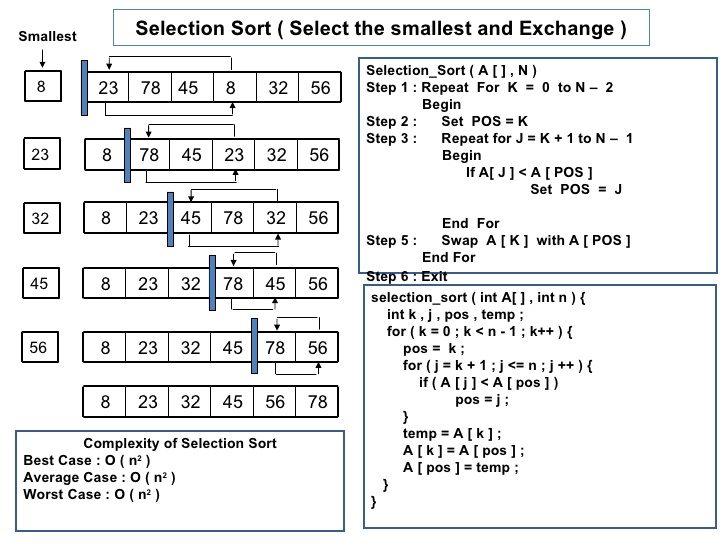

A sorting technique that is typically used for sequencing small lists. It starts by comparing the entire list for the lowest item and moves it to the #1 position. It then compares the rest of the list for the next-lowest item and places it in the #2 position and so on until all items are in the required order. Selection sorts perform numerous comparisons, but fewer data movements than other methods. Selection sort is a sorting algorithm, specifically an in-place comparison sort. It has O(n2) time complexity
